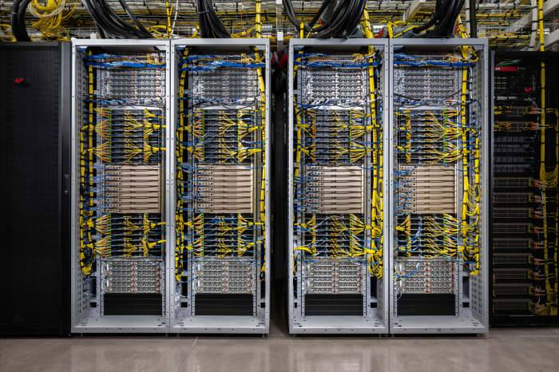

CoreWeave Revenue Jumps 168% to $3.66B, but Interest Still Eats the Profit
CoreWeave reported third-quarter revenue of $3.66 billion, up 168% year over year and ahead of the $3.54 billion consensus, with adjusted operating income of $379 million, up 75%. Interest expense of $846 million still ran at more than twice operating income, and the revenue backlog reached $133 billion. Shares rose about 6% after hours. On the earnings call, management said qualified demand runs about 10 times available capacity through the end of 2027 and pledged no new parent-level unsecured debt at current yields through 2027. Management also set a profitability date: adjusted net income turning positive in the first half of 2028.

- 01THE PRINT — CoreWeave reported third-quarter revenue of $3.66 billion, up 168% year over year, beating the $3.54 billion consensus, with adjusted operating income of $379 million, up 75%, and a diluted net loss of $1.27 per share, in line with consensus, in results published November 10, 2026.
- 02THE CATCH — Interest expense of $846 million, up from $310 million a year earlier, still runs at more than twice adjusted operating income, and the adjusted operating margin fell to 10% from 16%, keeping financing cost as the central question for the model.
- 03THE WATCHPOINT — The earnings call on November 10 gave no explicit December-quarter revenue figure in the coverage read; management instead set out the funding shift to delayed-draw facilities and customer deposits, and whether the $133 billion backlog keeps converting into revenue at the current pace.
WHAT HAPPENEDWhat Happened
CoreWeave reported third-quarter revenue of $3.66 billion, up 168% year over year, beating the $3.54 billion FactSet consensus and topping the company's own $3.45 billion to $3.60 billion guidance range. Adjusted operating income rose 75% to $379 million, ahead of the $200 million to $260 million the company had guided. The company posted a diluted net loss of $1.27 per share, in line with the Wall Street consensus.
The profit picture stayed lopsided. Adjusted operating margin fell to 10% from 16% a year earlier, and interest expense reached $846 million, up from $310 million a year earlier, more than double the adjusted operating income. CoreWeave's revenue backlog reached $133 billion, above the $131 billion analysts polled by S&P Global had expected, against about $104 billion at the end of June plus more than $25 billion of new commitments signed early in the third quarter.
The company also raised its full-year 2026 revenue forecast to $13.0 billion to $13.3 billion, from $12.4 billion to $13.2 billion, raised its annualized run-rate revenue guidance to $20 billion to $21 billion to exit 2026, lifted full-year adjusted operating income guidance to $1.275 billion to $1.375 billion, and guided fourth-quarter interest expense of $1.05 billion to $1.15 billion. Shares rose about 6% in after-hours trading after closing Tuesday at $48.73. The stock has nearly halved since October 6, and prices on its debt have fallen sharply, with its 2032 senior notes trading at about 75% of face value. The company held its earnings call at 5 p.m. Eastern Time; management gave no explicit December-quarter revenue figure, instead setting out the funding shift described in the update below.
After the call, the financing picture sharpened further. Chief financial officer Nitin Agrawal said CoreWeave does not intend to issue additional parent-level unsecured debt at current yields through 2027, projecting under $5 billion of parent-level debt financing through 2027, with asset-level secured debt trading around par. Chief executive Michael Intrator said qualified demand runs about 10 times available capacity through the end of 2027, with demand for 2028 already several times larger than available capacity. The company also launched Forge, a cloud service for running and evaluating AI models, and said it is opening its first data centers in Asia. Agrawal also set out a path to profitability: the adjusted net loss should narrow meaningfully in 2027, with adjusted net income turning positive in the first half of 2028 and for the full year.
WHY IT MATTERSThe beat was real. The financing question is unchanged.
CoreWeave cleared every bar it set for itself in August: revenue above the top of its range, adjusted operating income well above its guided range, and a backlog that grew past $129 billion of combined commitments to $133 billion. For a stock that has lost about half its value in five weeks on fears the neocloud model cannot fund its own build-out, a clean beat on the top line is the minimum viable defence, and the market's first reaction, up about 6% after hours, says it was enough for now.
The number that decides the story is still the interest bill. At $846 million for the quarter, interest expense runs at more than twice adjusted operating income, and the company's own guidance had it at $860 million to $940 million. The model converts backlog into revenue only as fast as it can finance and energise capacity, and the cost of that financing is now the binding constraint. The call is where management has to show the funding chain still works at a price the business can carry.
WHY IT MATTERSBacklog is the asset; power and credit are the gates
A $133 billion backlog is the largest contracted demand book among the neoclouds, built on multi-billion-dollar deals with Meta and OpenAI and a close relationship with Nvidia, which holds about 9% of the company and supplies the GPUs the whole model depends on. The backlog is real contracted revenue, not a pipeline, and it is why the revenue line keeps compounding at triple-digit rates.
But backlog converts only when data centres are built, powered, and paid for. Active power stood at about 1.5 gigawatts at the end of June with about 3.7 gigawatts contracted, and the company guided full-year 2026 capital expenditure of $35 billion to $39 billion. The December-quarter guidance on the call, and any update on financing costs, will tell whether the conversion rate holds or whether the debt market's verdict, bonds at 75 cents on the dollar, starts to slow the build.
UPDATE — EARNINGS CALL, NOV 10The call answered the funding question, not the revenue one.
The earnings call gave no explicit fourth-quarter revenue figure in the coverage read. Management instead addressed the financing question head on: CoreWeave is moving away from unsecured public debt toward delayed-draw term loans matched to specific customer contracts, and chief executive Michael Intrator said those facilities, together with customer deposits, should fund the significant majority of capital needs through 2027.
The numbers behind the shift check out across sources. About $9 billion of customer prepayments and deposits is expected in the next three months, and the weighted average cost of debt across the business was 7.9%, down 250 basis points from a year earlier. The December-quarter revenue figure remains unguided; the call's answer was a funding path, not a revenue number.
The call also produced two concrete commitments beyond the funding mix. Agrawal put a number on the unsecured-debt pause, under $5 billion of parent-level debt financing through 2027, and said the asset-level secured debt market has remained stable, with loans trading around par. Intrator added that qualified demand runs about 10 times available capacity through the end of 2027. The company also launched Forge, its service for running and evaluating AI models, and said its first data centers in Asia are opening.
The call also put a date on profitability for the first time. Agrawal said the adjusted net loss should reduce meaningfully in 2027 and turn into adjusted net income in the first half of 2028, holding positive for the full year. That is a forecast, not a result, and it sits alongside the same call's warning that the business still needs under $5 billion of parent-level capital through 2027. The path is now dated; the interest bill in the meantime is still the number to watch.
SIGNAL JUDGMENT — ANALYSISA beat that buys time, not a verdict
Tokenta Signal's judgment: This is the print the neocloud model needed, revenue above the top of guidance, operating income well above its range, and a backlog that keeps growing. But the beat does not answer the question the market has been asking since October, which is whether CoreWeave can keep borrowing cheaply enough to turn $133 billion of contracts into revenue. Interest at $846 million against $379 million of adjusted operating income is the whole debate in one ratio. The December-quarter guidance on the call is the next checkpoint, and until financing costs come down, every beat will be read as a reprieve rather than a resolution. Update after the call: management gave no explicit fourth-quarter revenue figure; instead it set out a funding path, delayed-draw facilities and customer deposits carrying the build, with borrowing costs coming down. That answers the financing question for now, and the December-quarter revenue number is still the open checkpoint.
WHAT REMAINS UNCERTAINWhat Remains Uncertain
EVIDENCEEvidence
Barron's report, read in full: Neocloud CoreWeave reported third-quarter revenue of $3.66 billion, up 168% year over year and ahead of Wall Street expectations of $3.54 billion. Adjusted operating income was $379 million, up 75%, while adjusted operating margin dropped to 10% from 16%. Interest expenses came in at $846 million, up from $310 million a year earlier. Shares were up around 6% in after-hours trading after falling 0.5% in regular hours.
PRIMARY SOURCESPrimary Sources
- Barron's: CoreWeave Earnings Beat Expectations, Assuaging Market Nervousness
https://www.barrons.com/articles/coreweave-earnings-stock-price-7c0a24d8 - MarketWatch: CoreWeave posts a revenue beat as AI demand surges
https://www.marketwatch.com/livecoverage/coreweave-earnings-stock-results-crwv-q3/card/coreweave-posts-a-revenue-beat-as-ai-demand-surges-vMASxeCJTCpxNKEd9LlF - The Wall Street Journal: CoreWeave Meets Wall Street Expectations, Shares Rise
https://www.wsj.com/business/earnings/coreweave-crwv-3q-2026-earnings-report-stock-9c109753 - Le Private Banker (Business Wire): CoreWeave Raises 2026 Revenue Forecast as Backlog Reaches $132.5 Billion
https://news.leprivatebanker.com/2026/11/10/coreweave-raises-2026-revenue-forecast-as-backlog-reaches-132-5-billion/ - MarketWatch: CoreWeave says its borrowing costs are coming down
https://www.marketwatch.com/livecoverage/coreweave-earnings-stock-results-crwv-q3/card/coreweave-says-its-borrowing-costs-are-coming-down-9kDW0HaHSbkYAa4lsUe9 - Unite.AI: CoreWeave AI Cloud Revenue Climbs 168% as Backlog More Than Doubles
https://www.unite.ai/coreweave-ai-cloud-revenue-climbs-168-as-backlog-more-than-doubles/ - StockTwits: CoreWeave Says Demand Is Outstripping Capacity – CFO Defends AI Expansion
https://stocktwits.com/news-articles/markets/equity/core-weave-says-demand-is-outstripping-capacity-cfo-defends-ai-expansion-today-s-environment-very-profitable-for-differentiated-technology/cNGD7CpR9Jl - AIStockWire: CoreWeave (CRWV) Q3: revenue beat, $7.5B cash gap
https://aistockwire.com/blog/coreweave-crwv-q3-2026-earnings-cash-burn-capex-interest-november-2026 - Meridian Report (SiliconANGLE): CoreWeave beats on revenue and lifts guidance, easing AI slowdown concerns
https://la.meridanreport.com/article/coreweave-beats-on-revenue-and-lifts-guidance-easing-ai-slowdown-concerns-b0cdm0?site=la - MarketWatch: CoreWeave provides a path to profitability
https://www.marketwatch.com/livecoverage/coreweave-earnings-stock-results-crwv-q3/card/coreweave-provides-a-path-to-profitability-zTHl6gfa7ylyg9FaON5W